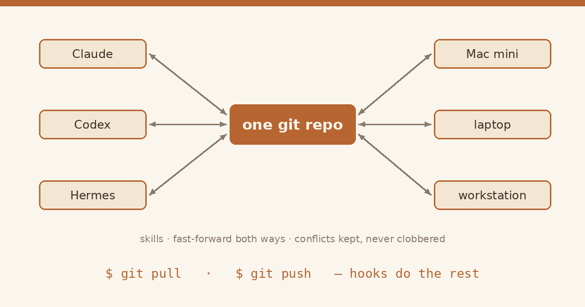
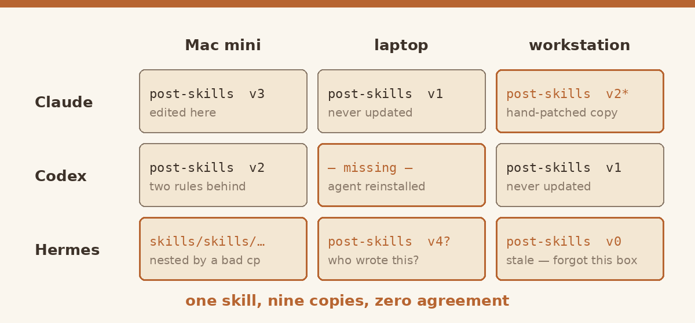
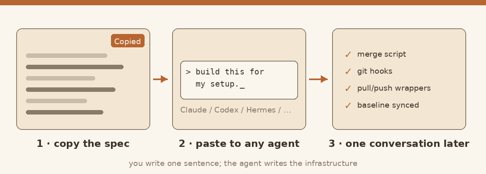

AI
一个 Git 仓库，同步我所有的 Agent
Claude、Codex、Hermes 在三台机器上共用同一套 skills —— 我需要敲的命令只有 git pull 和 git push。

痛点
现在每个 AI 产品都长出了自己的「skills」：Claude 放在 ~/.claude/skills，Codex 放在 ~/.codex/skills，Hermes 放在 ~/.hermes/skills。而我还同时用三台机器：Mac mini、笔记本、工作站。在一台机器上教会一个 agent 一个新技能，另外五份拷贝对此一无所知。skills 各自漂移、记忆分叉，同一条规则要在三个地方改三遍，每遍还改得不太一样。

设计逻辑
整个设计就一段话 —— 而这段话也正是你要贴给 agent 的内容（保持英文即可，agent 都看得懂）：
Build a cross-agent, cross-device skill sync for me:
hub: one private git repo; inside it, one snapshot dir per agent
(claude/ codex/ hermes/) mirroring each agent home's skills.
merge, don't copy: keep a per-DEVICE base hash for every skill
(a local file, never committed).
repo changed, home didn't -> fast-forward repo -> home
home changed, repo didn't -> fast-forward home -> repo
both changed -> keep mine; save repo version
as <skill>-CONFLICT-from-repo/
never overwrite silently
ownership: each skill has ONE owning agent; other agents receive
copies stamped with a marker — regenerated, never hand-edited.
automation: git hooks (core.hooksPath)
post-merge / post-rewrite -> merge repo->homes, then fan
out skills across agents
pre-push -> block while conflicts remain
deletions: report only, never auto-propagate.每次 git pull 之后，新 skills 自动流入并分发到所有 agent；每次 git push 之前，状态要么完成对账，要么拒绝推送。两个动词，其余全是自己运转的管道。
怎么拿到它
别自己手写实现。点上面代码块的「复制」按钮，把它贴给任何一个够强的 agent，然后说一句：「按我的环境把它搭出来。」

喜欢这篇文章？发到自己邮箱，稍后阅读。